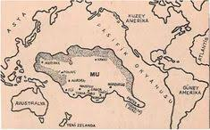
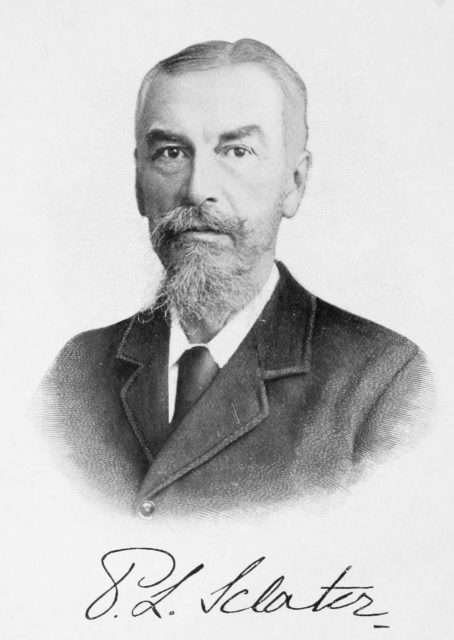
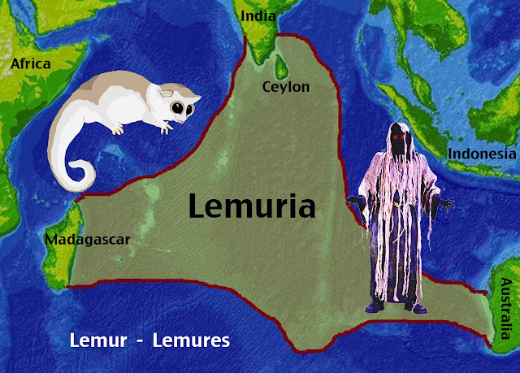
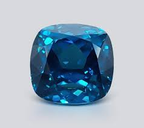
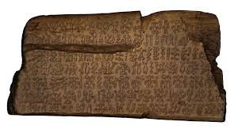
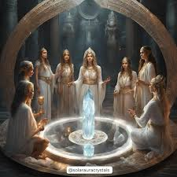
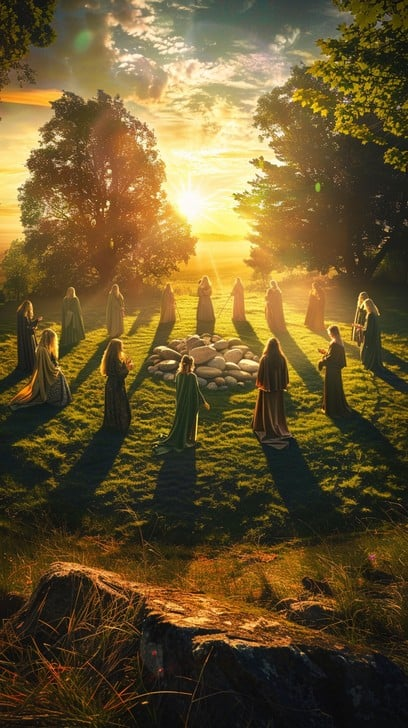

LEMURIA (MU)

Introduction
Lemuria: Between Myth and Scientific Possibility:
For decades, scientists and researchers have raised questions about the existence of a legendary submerged continent known as Lemuria, believed to have been located in the Indian or Pacific Ocean. According to reports from 2013, evidence emerged that may support the possibility of its actual existence, reigniting academic discussions on the subject. Mythological accounts describe Lemuria as the home of one of the earliest advanced civilizations on Earth. Its inhabitants, referred to as the Lemurians, were believed to be highly spiritual beings who lived in perfect harmony with their natural environment. Traditions associated with Lemuria suggest that this civilization possessed profound knowledge of energy and the ability to harness it for the welfare and evolution of their society. The Lemurian civilization is said to have thrived for thousands of years, developing advanced technologies that enabled the construction of great cities and temples dedicated to meditation and spiritual connection. Furthermore, Lemuria is described as a center of knowledge and wisdom where various spiritual and scientific disciplines were studied and practiced. Nevertheless, controversy persists within scientific circles regarding the validity of these claims. While some argue that recent geological evidence may hint at the presence of sunken lands, others maintain that Lemuria remains, for now, more a part of mythological and spiritual heritage than a scientifically proven reality.
this missing country has acquired a variety of names: sacred Tibetan texts remember it as “Ra-Mu”; inscriptions on the American continents refer to it as the “lost Motherland of Mu”; and Edgar Cayce, who had access to the Akashic Records,1 names it “Muri” or “Lemuria.” “Lemuria” may have originated from the word lemures, which the Romans used to describe the spirits of their dead ancestors who walked by night.
Literary
Lemuria was the land that gave rise to the legend of Eden, existing long before Atlantis was settled. Imagine a world in which any errant thought immediately materialized; where magic was everywhere and easy, but very few people had the skills to control it. Where people understood, at a very conscious level, that dreams are reality. The consciousness of the people of this society had evolved from a state much less involved with physicality, in which the unity of all things was much more apparent. After moving further into physicality, the people found themselves unable to stabilize reality on their own, as the momentary thoughts flashing through their minds led to a rapidly changing experience of their external reality.
Mu was first hypothesized by Augustus Le Plongeon. While his claims were more restrained compared to later theories about Mu, he still maintained that Mu had sunk overnight and that its survivors went on to establish the ancient civilizations of the Maya and Egypt.
Le Plongeon based his claims on his interpretation of Mayan texts, asserting that a woman known as "Queen Moo" fled Mu and founded the ancient Egyptian civilization.

In an article titled "The Mammals of Madagascar" published in The Quarterly Journal of Science, Sclater proposed that this animal distribution could only be explained by postulating the existence of an ancient lost continent in the Indian Ocean, which connected Madagascar, India, and Africa.He say "The anomalies of the mammalian fauna of Madagascar can best be explained by supposing that … there was formerly a large continent occupying parts of the Atlantic and Indian Oceans… this continent was broken up and has left behind only islands, some of which became joined with Africa and some with what is now Asia; Madagascar and the Mascarene Islands being remnants of this great continent. I would propose to call this continent Lemuria." Sclater named this hypothetical continent Lemuria after the lemurs.
Some have tried using Lemuria as a political tool. For example, the nationalist Tamil government sought to capitalize on legend and equate Lemuria with a kingdom called Kumari Kandam, which it deemed the cradle of civilization. Ataturk, the controversial founder of modern Turkey, said Lemuria was the ancestral birthplace of the Turks.
Despite the fanciful nature of Lemuria, in 2013, geologists found fragments of granite and zircon in the Indian Ocean, south of India, supporting the existence of a lost continent. This proposed continent, named Mauritia, disappeared around 84 million years ago, aligning with some aspects of Sclater's original Lemuria concept.
Throughout the nineteenth century, followers of Madame Blavatsky's The Secret Doctrine theorized that human history has passed through several civilizations and human races. The Secret Doctrine spoke of seven human races, with Lemuria occupying the third place in this classification. In her book, she explained the reasons for the extinction of Lemuria, ending with the emergence of the next civilization, which is Atlantis.
The esoteric perceptions of Lemuria did not die with plate tectonics. Rather, there is a place called Lemuria in California, founded by a religious group in 1936. It seems to fully embrace the supposed teachings of the civilization of Mu, including many ideas put forward by Blavatsky, such as human spiritual evolution and karma.

In the mid-1800s, a few scientists, armed with scant evidence, reported about the existence of a lost continent in the Indian Ocean, and named it Lemuria. Some even reported about a bygone humanoid race, the Lemurians, with four arms and large hermaphroditic bodies, referring them as ancestors to both modern humans and lemurs
Lemuria sank into the sea during the Cataclysm, which ended the Thurian Age. The Lemurians escaped onto the east coast of the Thurian continent and were enslaved by a mysterious civilization. They endured a millennium of brutal slavery, which reduced them to a state of savagery. They eventually rose up and destroyed their masters, before pushing them away into Stygia. The descendants of the Lemurians became the Hyrkanians. The Turanians themselves are a branch of the Hyrkanians. Perhaps scions of the more privileged of the Lemurian slaves of the Muvians. The Hyrkanians and Turanians with time became Turks, Mongols, and other central Asiatic peoples

James Churchward first learned about Mu from records on sacred Naacal tablets in India. (The biography of Col. James Churchward in 10,000 B.C. appendix II will help to confirm that Mu is not just a legend—it was a real place.) After many years of searching in Asia and Central America for further information about the lost country, Churchward believed that, until , the largest remaining island of the Motherland of Mu lay in the southeastern Pacific on a broad area of uplifted sea-floor. It extended southeast from Hawaii to Easter Island, with its center somewhat south of the equator.
Lemuria, according to Blavatsky, was even older than Atlantis and was located in the Pacific Ocean. She imagined it as the birthplace of humanity, where an ancient race of beings lived in peace, communicated psychically, and reproduced by laying eggs. She said that physical human bodies, along with male and female sexes, only appeared later when higher beings came down to Earth, leading to the rise of the Atlanteans
Part of the shadowy heart of ancient Rome the Lemuria or Lemuralia was a time when Romans sought to banish restless spirits from their homes. Known as 'lemures', these malevolent ghosts were feared and ritually exorcised during midnight rites led by the head of the household.At the stroke of midnight, barefoot and solemn, they cast black beans over their shoulders, chanting: "I send these; with these beans, I redeem me and mine." Then, the family would clash pots and pans, crying: "Ghosts of my fathers and ancestors, be gone!".This ancient tradition, described by Ovid , is said to trace back to Romulus, who founded the rites to appease the spirit of his slain twin, Remus.
Of the five now existing continents," writes Ernst Haeckel, in his great work "The History of Creation,"[11] "neither Australia, nor America, nor Europe can have been this primæval home [of man], or the so-called 'Paradise,' the 'cradle of the human race.' Most circumstances indicate Southern Asia as the locality in question. Besides Southern Asia, the only other of the now existing continents which might be viewed in this light is Africa. But there are a number of circumstances (especially chorological facts) which suggest that the primeval home of man was a continent now sunk below the surface of the Indian Ocean, which extended along the south of Asia, as it is at present (and probably in direct connection with it), towards the east, as far as Further India and the Sunda Islands; towards the west, as far as Madagascar and the south-eastern shores of Africa. We have already mentioned that many facts in animal and vegetable geography render the former existence of such a South Indian continent very probable. Sclater has given this continent the name of Lemuria, from the semi-apes which were characteristic of it. By assuming this Lemuria to have been man's primæval home, we greatly facilitate the explanation of the geographical distribution of the human species by migration.
Five and thirty years ago, Isidore Geoffrey St. Hilaire remarked that, if one had to classify the Island of Madagascar exclusively on zoological considerations, and without reference to its geographical situation, it could be shown to be neither Asiatic nor African, but quite different from either, and almost a fourth continent. And this fourth continent could be further proved to be, as regards its fauna, much more different from Africa, which lies so near to it, than from India which is so far away. With these words the correctness and pregnancy of which later investigations tend to bring into their full light, the French naturalist first stated the interesting problem for the solution of which an hypothesis based on scientific knowledge has recently been propounded, for this fourth continent of Isidore Geoffrey is Sclater's 'Lemuria'—that sunken land which, containing parts of Africa, must have extended far eastwards over Southern India and Ceylon, and the highest points of which we recognise in the volcanic peaks of Bourbon and Mauritius, and in the central range of Madagascar itself—the last resorts of the almost extinct Lemurine race which formerly peopled it
Ibn al-Wardi says in his book "Khuraidat al-Aja'ib" about a land in the Indian Ocean believed to be Lemuria, but he does not mention its name: The land of Berbera: It connects to the land of Nubia by the sea. It is opposite Yemen. It has prosperous villages connected by a mountain called Qanuni. It is a mountain with seven protruding peaks that extend into the sea forty-four miles. At the top of these mountains is a small country called Al-Haweya. Some of the people of Berbera eat frogs, insects, and filth, and fish at sea with small nets. Next to this land is the land of the Zanj, which is opposite the land of Sindh, and between them is the vast Persian Gulf. They are the blackest of the black people, and all of them worship idols. They are a people of strength and cruelty, and they fight mounted on cows. There are no horses, mules, or camels in their land.
Location
The lost land of Mu was later mentioned extensively by James Churchward in his writings. He believed that the continent was located somewhere between Easter Island and the Mariana Islands from east to west, and between Hawaii and Mangaia from north to south.
Some archaeologists suggest that remnants of the Lemuria/Mu are somewhere in the Pacific. Churchward and popular TV shows highlighted a site called Nan Madol in Micronesia. Much of it is partially submerged and has a layout similar to Venice in Italy. Due to some confusion and ambiguity about its age and purpose, some enthusiastic researchers suggest that it is part of a lost civilization. Other proposed sites for Lemuria include the Yonaguni Monument in Japan and Easter Islan
To the west, Lemuria’s several thousand square miles included the Society, Cook, Austral, Tuamotu, and Marqueses islands, all of which are relatively close together, south of Hawaii and south of the equator. Discoveries of coal and a long history of floral growth on the island of Rapa, one of the Austral Islands, suggest that this portion of the Pacific Ocean was once above the surface.3 The western section of the large island of Lemuria gradually sank and, as ocean waters threatened their homes and temples, people moved to the higher, safer ground of Sumatra, Java, Borneo, New Guinea, and Australia.
Archaeologist Stacy-Judd reports that the natives of Easter Island (Rapa Nui) have said that they are living on the peak of a holy mountain of Mu. They believe Easter Island, which is formed from three extinct volcanoes, is the only portion of their motherland that the sea has not covered. Located 2,300 miles from the coast of Chile, the mysterious island has some of the most impressive structures in the Pacific. Enormous monuments to the dead in the form of huge burial platforms line its thirty-six miles of coastline. The carefully shaped stones of the four- or five-hundred-feet-long platforms weigh two to twenty tons apiece and were put together without mortar in polygonal fashion
Research
It is believed that the lost continent of Mu, also known as Lemuria, once existed in the Pacific Ocean over 10,000 years ago. Supporters of this theory claim that more than 60 million people lived on Mu, belonging to a civilization known as the Naakal.
The findings, published on ResearchGate, focus on microscopic mineral grains called zircons found in volcanic rocks on the island of Mauritius. While the island is relatively young in geological terms, uranium-lead dating reveals that some of the zircon crystals are more than three billion years old, far older than the island itself.

The study also draws on seismic and gravity data from beneath the Mascarene Plateau, a submerged region northeast of Madagascar. The data show that the crust in this area is up to 30 kilometers (about 18.6 miles) thick, much deeper than the normal ocean floor. That unusual thickness supports the idea that the plateau may be part of a sunken continental fragment now buried under lava flows and ocean sediments.
The continent’s Tamil name (that is, Kumari Kandam) can be translated as “land of the maiden.” Some speculated that Kumari Kandam had been a matriarchal society where women chose their husbands and owned all property. Kumari Kandam is one of multiple mentions in ancient Indian texts of lands in South India lost to the ocean. Possibly these are records of historical tsunamis and other natural disasters.
Their records and writings show that they were acquainted not only with the rest of the world as it existed during their time, but with what had existed on the face of the earth prior to the formation of their continent, and what would eventually happen to their continent. This was their guide in their wide colonization of other lands, and in the dispersion of their people to distant points in various periods. Again, we must take into consideration the fact that for over a hundred thousand years they had an opportunity of developing their knowledge and of carrying out their plans for preserving the race of mankind against the cataclysmic changes that they knew would take place.
The affinities between the fossils of both animals and plants of the Beaufort group of Africa and those of the Indian Panchets and Kathmis are such as to suggest the former existence of a land connexion between the two areas. But the resemblance of the African and Indian fossil faunas does not cease with Permian and Triassic times. The plant beds of the Uitenhage group have furnished eleven forms of plants, two of which Mr. Tate has identified with Indian Rájmahál plants. The Indian Jurassic fossils have yet to be described (with a few exceptions), but it has been stated that Dr. Stoliezka was much struck with the affinities of certain of the Cutch fossils to African forms; and Dr. Stoliezka and Mr. Griesbach have shown that of the Cretaceous fossils of the Umtafuni river in Natal, the majority (22 out of 35 described forms) are identical with species from Southern India. Now the plant-bearing series of India and the Karoo and part of the Uitenhage formation of Africa are in all probability of fresh-water origin, both indicating the existence of a large land area around, from the waste of which these deposits are derived. Was this land continuous between the two regions? And is there anything in the present physical geography of the Indian Ocean which would suggest its probable position? Further, what was the connexion between this land and Australia which we must equally assume to have existed in Permian times? And, lastly, are there any peculiarities in the existing fauna and flora of India, Africa and the intervening islands which would lend support to the idea of a former connexion more direct than that which now exists between Africa and South India and the Malay peninsula? The speculation here put forward is no new one. It has long been a subject of thought in the minds of some Indian and European naturalists, among the former of whom I may mention [Mr. Blandford] and Dr. Stoliezka, their speculations being grounded on the relationship and partial identity of the faunas and floras of past times, not less than on that existing community of forms which has led Mr. Andrew Murray, Mr. Searles, V. Wood, jun., and Professor Huxley to infer the existence of a Miocene continent occupying a part of the Indian Ocean.
"With regard to the geographical evidence, a glance at the map will show that from the neighbourhood of the West Coast of India to that of the Seychelles, Madagascar, and the Mauritius, extends a line of coral atolls and banks, including Adas bank, the Laccadives, Maldives, the Chagos group and the Saya de Mulha, all indicating the existence of a submerged mountain range or ranges. The Seychelles, too, are mentioned by Mr. Darwin as rising from an extensive and tolerably level bank having a depth of between 30 and 40 fathoms; so that, although now partly encircled by fringing reefs, they may be regarded as a virtual extension of the same submerged axis. Further west the Cosmoledo and Comoro Islands consist of atolls and islands surrounded by barrier reefs; and these bring us pretty close to the present shores of Africa and Madagascar. It seems at least probable that in this chain of atolls, banks, and barrier reefs we have indicated the position of an ancient mountain chain, which possibly formed the back-bone of a tract of later Palæozoic, Mesozoic, and early Tertiary land, being related to it much as the Alpine and Himálayan system is to the Europæo-Asiatic continent, and the Rocky Mountains and Andes to the two Americas.
Poeple
The Lemurian civilization thrived for thousands of years, developing advanced technologies that allowed them to build great cities and temples dedicated to meditation and spiritual connection. Lemuria was also a center of knowledge and wisdom, where various spiritual and scientific disciplines were taught and practiced.
Numerous myths and legends describe the people of the Motherland of Mu as intuitive and nurturing, but it is impossible to accurately picture the hair and skin color of those who lived so long ago. In the thousands of years that have passed since their homeland sank, the descendants of the Lemurians who survived its destruction have mingled with persons on other islands. In addition, these beautiful Pacific Islands have always attracted travelers who stayed, intermarried with the inhabitants, and produced offspring with varied physical characteristics.
On the banks of the Mississippi, in 1885, while quarrying rock for a dam, two feet below the level of the river, workers found the petrified remains of a gigantic human being. The ten-foot, nine-and-a-half-inch long skeleton, with a chest that measures fifty-nine inches around and a massive head that measures thirty-one inches around and was very flat on top, was in a grave that had been dug out of solid granite.Vague legends in Central America report that giants built the highest pyramids in the New World. Numerous references in mythology describe these very tall people, who are often called Titans.
A typical Lemurian, representative of the civilization at its peak, would appear markedly different from modern humans. Their heads were disproportionately large with high foreheads measuring approximately six to seven inches. Notably, a walnut-sized protrusion was present about an inch and a half above the nose bridge. Though it might seem a deformity today, it was a natural feature for them, consisting of a soft mass beneath delicate skin.In height, these Lemurians were a little above the average of today, with a great many attaining a height of almost seven feet. The arms were much larger, longer, and well-developed in muscle, while the limbs were not so long but fairly well-developed. The hair on the top of the head was short, not through any style of dressing or training, and it grew very lightly and was of a very fine texture. The hair on the back of the head, however, grew very long, and was often braided or arranged in very fancy forms across the shoulders or down the back. If there was any one particular form of ornamentation it was in connection with dressing this long hair, and individual taste was given a wide scope in this regard, if we are to judge from pictures carved in stone or drawn or painted upon leather.The necks supporting the heads were long and slender and usually a decorative collar formed of beads or stones was the only fancy addition to the adornment of the body. The feet and hands were large and every joint of the fingers and toes was easily moved and controlled, thereby developing them to a greater degree than we find in the present day races of man.
The women were somewhat shorter than the men and somewhat more corpulent, but their features were far more refined than those of the men. Very few of the men had any hair upon the face and the women protected their faces from the heat of the sun and from the effects of the weather by wearing a veil made of some vegetable fiber through which air passed freely, but the protection against sunburn was evidently sufficient to result in a fairer complexion for the women, throughout many generations, than was found among the men. The ears were much smaller than we find them today but the nostrils were largely developed and the nose was more broad and flattened on the face than we find among the people of the western world of the present period. The eyes were large and very clear, and gave an impression of a piercing gaze and keenness of perception that must have been very impressive. The skin was not of dark complexion but merely tanned, while the hair was very dark and the eyes were brown. The teeth were very small but uniformly even and regular.
We admit that if a child born today, could be separated from the present influences of misconception and taken to a distant point and raised and trained in a purely natural spiritual way, with no contact other than that which is consistent with the understanding of higher laws, that such a child would become a great master so far as the highest principles of life are concerned. This was the situation with the Lemurians. The Lemurians were not surrounded, right from the very earliest days, with any established conceptions of the universe or of the natural laws operating in the universe, and they had no established opinions or orthodox doctrines of life prescribed for them by any special group of scientists or educators, for all knowledge was obtained through the individual observation of Nature at work.
The Lemurians were similar to men, although they were more refined and delicately built, building a kind of utopia. They had an androgynous appearance, fair skin, and blond or white hair. Despite the island being close to other human nations, they were reclusive and mysterious, but they didn't seem to be hostile to travelers. They are ruled by a group of monks and sages known as the Pilgrims of Light.
Generally, Lemurians live an average of 200 years. They are between 1.50 and 1.90 meters tall and weigh between 40 and 80 kilograms.
Spiritually, some people associate Lemuria with dolphins and their connection to other worlds and entities (aliens) who monitor the planet and either create the accelerating natural disasters or prevent them from destroying it. This all seems to be part of a greater plan as the journey of humanity evolves out of existence. Some speculate that the Lemurians were at some point telepathically linked to the dolphins. - their tones called "Dolphin Codes."
The Lemurians are children of Men (Enochians) and of Atlanteans, precisely of the deva clan. Inheriting the magical nature of the Atlanteans, they were considered to be born psychics, with impressive mystical abilities. They produced a strong wine that was traded all over the world, mostly consumed in Atlantis and Shadair in Nod.
language
Colossal platforms and statues of legless men are not the only mystery of Easter Island. In 1868, newly converted Easter Islanders sent to the bishop of Tahiti, as a token of respect, an ancient piece of wood with long strands of human hair wrapped around it. After removing the hair, the bishop discovered that the small board was covered with writing. An investigation revealed that at one time there were over 500 of these boards or tablets on Easter Island, but only twenty-one have survived, scattered worldwide in museums and private collections. No one has successfully translated Rongorongo, the tiny, strange writing on the tablets, although it so closely resembles script from the Indus Valley in India that it must have had a common origin. Evidence of a similar written script has survived in remote Oleai Island, many thousands of miles away from Ponape.There is a theory that to read Rongorongo, the writing on the tablets from Easter Island, one starts from the left-hand bottom corner, and proceeds from left to right. At the end of the line, you turn the tablet around before reading the next line. It’s like reading a book in which you begin at the bottom of the page and every other line is printed back-to-front and upside-down.

In the 19th century, some scholars considered that Pacific language (such as Maori or Hawaiian languages) had "Lemurian" remnants.
Others have linked it to the Tamil language of southern India, because the Lemuria hypothesis originally arose to explain the spread of lemurs between Madagascar and India.
Religion
In Lemuria, a mystical land that, according to esoteric traditions, existed in the Pacific thousands of years ago, spirituality was the foundation of its society. Priestesses were responsible for maintaining energetic balance and harmony among beings, using advanced methods of healing and spiritual connection, always in tune with the energy of the Earth and the stars. They had a deep connection with crystals, which were seen as sacred tools for healing and consciousness amplification. Lemurian Crystals were their sacred tools, used to store spiritual information, like a kind of "crystalline library." Unlike other crystals, Lemurians themselves, and especially their priestesses, believe they are programmed with spiritual information and light codes.

At the heart of the ancient civilization of Lemuria, deeply spiritual ceremonies took place that teach us about unity, harmony, and connection with nature even today. Lemurian ceremonies were an expression of advanced spiritual knowledge and respect for life in all its forms. These rituals strengthened the community, healed both body and soul, and allowed deep meditative connection with cosmic energy.

The initiated women and men who served as healers, priestesses, channelers and guardians of the sacred knowledge formed what would later be known as the Brotherhood of the Rose These priestesses worked with the energy of the heart, the vibration of unconditional love, the use of crystals, sacred chants, sacred geometry, and above all, with the rose as a symbol of the blossoming of the soul and the awakening of consciousness. After the fall of Lemuria, this wisdom was safeguarded and transmitted through secret lines or circles of wise women who reappeared in Egypt, in the mystery schools of Isis, in Ávalon, and later included in the Crusades, as a female counterweight to the Templars.The connection with female Christian consciousness, also associated with María Magdalena who is one of the last great teachers of the brotherhood of the rose.
achievements
When it is said in modern writings that the ancient Egyptians attained a degree of civilization and intellectual mastership that was superior to our present day attainments, this is generally said in a relative way, for it is only relatively true. When we say that the Lemurians reached a higher degree of civilization then we have reached, it is likewise meant in a relative sense, although there are some evidences of attainment that were actually beyond the scientific achievements of modern times.
Science and Education
Because of their Atlantean lineage, the Lemurians had a certain affinity for magic, although they developed a different kind of mysticism compared to their Aryan cousins. They recognize the existence of seven chakras, but prefer to focus on just one: the sixth, the mind.
Through the ajna, the "third eye," the Lemurians' senses were extended, reaching previously unknown areas of their own minds and the world around them. Their powers varied, but among them were clairvoyance, prognostication, astral projection, psychometabolism, telekinesis, and telepathy.
The Fall of Lemuria
The fall of Lemuria was a cataclysmic event that marked the end of a golden age of wisdom and peace. According to various esoteric traditions, Lemuria was destroyed by a series of natural disasters, including earthquakes and volcanic eruptions, that submerged much of the continent into the Pacific Ocean. This event was seen as a necessary energetic rebalancing of the Earth.
Before their fall, the Lemurians knew their time was coming to an end. Many of them migrated to other parts of the world, carrying with them their knowledge and traditions. These survivors established new communities in regions such as Asia, the Americas, and Africa, where they influenced the development of local civilizations and planted the seeds of new spiritual cultures.
Churchward determined that four major cataclysms, in 800,000 B.C. ,200,000 B.C. , 80,000 B.C., and 10,000 B.C. , were the culprits responsible for nature’s tearing the beautiful land in the Pacific Ocean to pieces. Numerous volcanic islands and coral atolls, which endure where Lemuria once stood, confirm the instability of the region. The tiny animals that produce coral only survive in 150 feet or less of water. Since remains of coral are found at depths of 1,800 feet in the Pacific, it indicates that the land that is now 1,800 feet deep was once shallow water, close to the surface. The instability of the ocean floor in the southeast Pacific constantly subjected the Lemurians to the problems of unexpected earthquakes and volcanic eruptions. As an illustration of the instability, sailors traveling in that vicinity sometimes report islands that are not on maps but, before long, the greedy ocean devours them and they are never seen again. In 1836 the island of Tuanaki, south of the Cook Islands, suddenly disappeared with all but one of its inhabitants, who was luckily visiting a nearby island at the 4 time of the surprising disaster